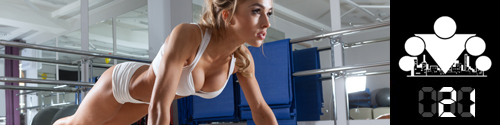

Reminder:
The last day of the training week we dedicate to developing flexibility and stretching. If that seems boring or unnecessary to anyone, believe me — only someone who hasn't stretched in a long time and has lost flexibility can truly appreciate how important this session is

NO CIRCUITS TODAY!!!
NO CIRCUITS TODAY!!!
There's an opinion that if you want to form some habit, you need to repeat it for 21 days, and then it will lock into your consciousness. Let's assume that's so, which means fitness, training, and proper nutrition are slowly but surely becoming part of your everyday life! And today's infopost we want to dedicate to the right attitude toward a healthy lifestyle and nutrition, and thereby draw a line under this week's topic.

A lot of people treat a diet as some heavy burden tied to limits on the amount and taste of the food they eat, but a necessary burden if you want to be slim and good-looking. But it's worth remembering that the word diet actually has Greek roots, and its original meaning is close to what we now call a lifestyle. And that's a very important point. Here's why:
The body is a reflection of lifestyle. And it looks in full accordance with the lifestyle you lead. No more and no less.
The problem is that people, at least most of them, don't see this connection. They don't understand that it's exactly those small actions they do regularly and those little decisions they make every day that determine the result they get in the end. Every time they decided to sleep longer instead of doing morning exercise, or chose the elevator instead of walking, or drank a bottle of sweet soda at lunch instead of regular water, every time they took a step in the opposite direction from the result they would have wanted. A small step, but in the opposite direction.
All these little things separately are invisible and habitual, so nobody pays attention to them, but it's exactly such little things that form our lifestyle. So next time, instead of expressing your dissatisfaction about the reflection in the mirror, it's worth remembering that it's only a reflection. And shift your dissatisfaction from the effect onto the cause, directing it toward the lifestyle. Because unlike the processes of breaking down and storing fat, going to an outdoor sports playground or reviewing your diet are processes quite within our power.
There are no secrets or hidden tricks in getting rid of extra weight or, conversely, gaining muscle mass — you just need to understand the physiological processes behind it. And the most wonderful thing is that these processes can be described by one simple formula, which we already broke down in detail earlier in the calorie-balance infopost. A simple combination of training and nutrition really does let you get excellent results.
But that's only half the trouble. The real problems start when your current appearance stops suiting you, while you don't want to change the established lifestyle at all. And that's when all the wonders of inventiveness the brain is capable of start showing up in an attempt to stuff the unstuffable (a new body into the old lifestyle), that is, to remove the dissonance that appeared: I have no time or no desire to train, but I won't eat baked goods, and at home I'll spin a hula hoop. Or: I'll eat a lot, but only vegetables. Or: instead of dinner I'll drink a glass of water. And in the morning — the same. A smaller number on the scale is always a joy. That's no less stupid than hanging a photo of a fitness model on the fridge while sitting on a starvation diet. Because you can only fool yourself for so long, and then lifestyle will take its own, and far-from-diet food will return to the plates, and baked goods will return to the table next to the familiar couch.
If you don't want to or aren't ready to change your lifestyle, then you should put aside the idea of abs or a firm butt until your hair starts falling out from nervous exhaustion over the swinging of the scale needle.

We want to note that regardless of weight, the body of an athletic and a non-athletic person will look completely different. And it's very hard to imagine a good-looking body without adequately developed muscles (this applies to both sexes). And muscles develop exclusively thanks to load, which we'll also talk about in the ADVANCED block. Leg length doesn't depend on whether you run with them or not. But the thickness of the butt — directly. Unfortunately young women very often forget this, torturing themselves with various diets and paying no attention to training at all. There are those who already seem quite thin, and the butt is still flabby, and every fold of fat shows and hangs as soon as they bend or sit. That all happens exactly from a lack of training.
One last thing. When you see someone whose appearance makes you envious and sorry about your own achievements, immediately think about what's behind that appearance. How many years of regular training, an active lifestyle, careful attention to nutrition (and even daily cooking instead of buying convenience foods and eating at cafeterias) and a daily schedule stand behind such a result. And will you be able to invest in yourself the same way to eventually get a similar result? We'll talk about this more later in the program.
Okay, we seem to have dealt with that. Now we suggest coming back to our educational program SOTKA and talking a bit more about how it's structured. We've already said that it's structurally split into 3 parts: the BASIC block (days 1 to 49), the ADVANCED block (days 50 to 91), and the TURBO block (days 92 to 98).
Right now we're at the very beginning of the path, in the BASIC block. The first two weeks of this block were fully dedicated to breaking down the training component of the program (the basic exercises and answers to the most common questions); the third week was dedicated to an equally important point — organizing proper nutrition. Because if you don't watch your nutrition, no training will be able to get you in shape!
That ends the mandatory part of the BASIC block, and further, starting from day 22 through 50, every day we'll publish general-character infoposts containing answers to the most frequently asked beginner questions (literally all of them that come up).
We'll come back to questions of TRAINING and NUTRITION again in the ADVANCED block, when we'll break down the exercises in more detail from the point of view of their load on specific muscles (because we all want to be not only strong and healthy, but also good-looking). In that same block we'll make changes to the training scheme, add the spirit of Street Workout, and the daily general-character infoposts will become more complex.
And finally, the last, TURBO block will become a test of your strength, because during the last week of training you'll get a new interesting assignment every day!
Those are the plans for the near future, so stay with us — it'll be interesting!